Introduction to Reinforcement Learning
Lecture 2 - Markov Decision Processes
Markov Decision Process
The Markov Proccess are the elementary building blocks.
Now over to MDPs which is what is actually used in Reinforcement Learning.
We start by extending our definition again:
Definition
Markov Deccision Process is a tuple $\langle S,\mathcal{A},\mathcal{P}, \mathcal{R}, \gamma \rangle$ where
- S is a (finite) set of states
- 𝓐 is a finite set of actions
- 𝓟 is a state transition probability matrix:
$\mathcal{P}^a_{ss^\prime}(S_{t+1} = s'\mid S_t = s, A_t = a)$.
- 𝓡 is a reward function: $\mathcal{R}^a_s = E[R_{t+1}\mid S_t = s, A_t = a]$
- $\gamma\in[0,1]$ is a discount factor.
We now introduce the concept of actions. Up til now we had everything else, but the actions
was just some given random sample. For now it is finite (but can be extended to continuous/infinite).
The transition matrix now depends on what action we take.
We extend our example and introduce the paths as decisions we can take:
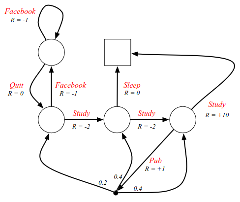
The decisions are the red labels on the arcs, and now we have some agency.
Now we choose to study e.g. and decide what state to go to. In FB we can
decide if we want to iterate back or go out. The only place where there
is some randomness is if we go to the pub, denoted by a black dot instead
of a circle. The goal is now to try to find the best goal.
To formalize what it means to take a decision, we introduce the concept of a policy.
(This is an example of a stochastic policy).
Definition
A policy π is a distribution over actions given states:
$$
\pi(a\mid s) = P(A_t = a\mid S_t = s)
$$
In other words, if you are in state s, the distribution gives you the mapping of
the probability of transitioning to another state. In MDPs the policies only
depend on the current state (due to the Markov property). In other words,
the policy is
stationary (time-independent).
$$
A_t\sim \pi(\cdot\mid S_t),\forall t > 0.
$$
It only depends on the current state, which by definition and the Markov property,
is all that is needed to act optimally. We don't have rewards in the policy,
because that is fully encapsulated by the state.
An important thing to realize about the connection between Markov decision processes
and Markov Reward processes, is that we can always recover a MRP from the MDP.
Given an MDP 𝓜 = ⟨S, 𝓐, 𝓟, 𝓡, 𝛾⟩ and a policy π,
the state sequence S
1, S
2, ... itself is a Markov process
⟨S,𝓟
π⟩ or a Markov chain - no matter what policy we choose.
The state and reward sequence
S
1, R
1, S
2, R
2, ... is a
Markov reward process ⟨S, 𝓟
π, 𝓡
π, 𝛾⟩, where
$$
\mathcal{P}^\pi_{s, s'} = \sum_{a\in\mathcal{A}}\pi(a\mid s)\mathcal{P}_{s,s'}^a
$$
$$
\mathcal{R}^\pi_{s} = \sum_{a\in\mathcal{A}}\pi(a\mid s)\mathcal{R}_{s}^a
$$
We define our transition dynamics and reward function by averaging over our policy.
(The averaging comes from the transition probabilities that sum to 1 - so this is
a weighted average). (Note: this is just a useful point - not central)
What is central, is the concept of the value function.
Definition
The state-value function $v_\pi(s)$ of an MDP is the expected return
starting from state s, and then following policy π:
$$
v_\pi(s) = E_\pi[G_t\mid S_t = s]
$$
We had a value function for MRP, but now we have agency and can make decisions since
we have a policy - some way to determine how to behave. The dependency on the policy
is included as subscripts.
We also define a second type of value function.
Definition
The action-value function $q_\pi(s, a)$ is the expected return
starting from state s, taking action a, and then following policy π:
$$
q_\pi(s, a) = E_\pi[G_t\mid S_t = s, A_t = a]
$$
This tells us how good it is to take a particular action in some state, which is
what we care about when deciding on what action to take: when we are in state s,
and perform action a, what is the expected return/total reward I get from that
point onwards. This is the key quantity used to help us optimize our MDP and
pick the best actions. Again, this depends on
the policy, which is included as subscripts.
State-value functions for the example. This is undiscounted, and the policy is
simply selecting a future state by a coin flip. Uniform random behaviour.
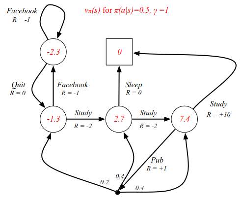
Bellman Expectation Equation
We can now define a second Bellman equation for these value functions.
$$
v_\pi(s) = E_\pi[R_{r+t} + \gamma v_\pi(S_{t+1})\mid S_t = s]
$$
It's the same general idea. The value function can be decomposed into the immediate
reward plus the discounted value of the next state. We know the future reward since
we know the policy. The same is true for the action-value function.
$$
q_\pi(s,a) = E_\pi[R_{t+1} + \gamma q_\pi(S_{t+1}, A_{t+1})\mid S_t, A_t = a]
$$
We can study this further with the look-ahead search diagrams. White circles are states,
black circles are actions.
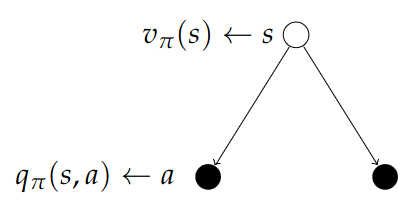
Calculating the value:
$$
v_\pi(s) = \sum_{a\in\mc{A}}\pi(a\mid s)q_\pi(s, a)
$$
When we are in the original state s, our value function averages over the actions we might take.
The probability of each action is defined by our policy. For each action there is a q-value
telling us how good it is to take that action from that state.
Now the converse step. The root of the tree is a state and the specific action we select.
So we are in a state and we ask the question: "How good is it to go right?".
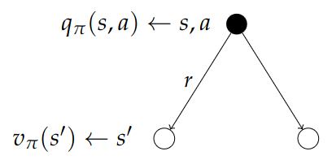
We average over the dynamics of the MDP, the environment might "blow" us to either of the
possible outcomes. For each outcome, we want to know how good it is to be in that state.
We average all possible future steps by using the probabilities in the transition matrix.
$$
q_\pi(s, a) = \mc{R}_s^a + \gamma\sum_{s\in\mc{S}}\mc{P}_{ss'}^a v_\pi(s')
$$
Stitching both of these charts together:
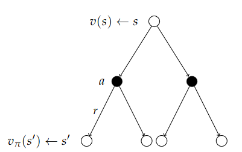
We now get a recursion which helps us understand v in terms of itself.
$$
v_\pi(s) = \sum_{a\in\mc{A}}\pi(a\mid s)\Big(\mc{R}_s^a + \gamma\sum_{s'\in S} \mc{P}_{ss'}^a v_\pi(s')\Big)
$$
This is how we end up solving the MDPs.
The root of the tree now is the value of being in a particular state. To determine that, we do
a two step look-ahead. We consider all possible actions we can take; go left or go right.
We then consider all the things the environment can do to us: blow us left, blow us right,
which sends us to some successor state we end up in. And now we want to know how good it is
to be in that state and then carry on with the usual policy. We average over the actions
and we average the following states which tells us how good it is to be in a particular state.
We can do the exact same thing for action-values.
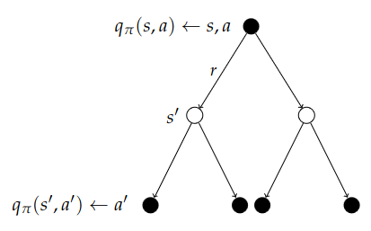
Now we stitch together the diagrams the other way around and look two steps forward. Now we
start with a particular state and action, and we are subjected to the environment and where
it might blow us, and from the resulting state, we determine what action we might take.
We consider the value of the action and average back over the tree. With the previous
recursion, we end up with a total of two recursions we can solve.
$$
q_\pi(s, a) = \mc{R}_s^a + \gamma\sum_{s'\in S}\mc{P}_{ss'}^a\sum_{a'\in\mc{A}}\pi(a'\mid s')q_\pi(s', a')
$$
Going back to the example where we have a uniform policy with probability 0.5 of taking
different actions:
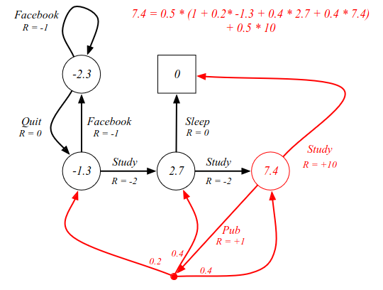
Using the concepts of looking forward two steps, we can verify that the C3 node has a value
of 7.4. The state value of 7.4 equals the steps: 0.5 probability of giong to sleep. There
is a 0.5 chance that we go to the pub, where we have several options where we end up in
a different state with a different value. The calculations are included in the image above.
All values in each state can be verified in a similar manner. Now, this is all well and fine,
but it does not tell us the best way to behave - which is what we really care about in RL.
Calculations:
| Cell | Calculation | Eq | Value |
| FB | 0.5(-1.3) + 0.5(-3.3) | = | -2.3
|
| C1 | 0.5(-3.3) + 0.5(0.7) | = | -1.3 |
| C2 | 0.5(0) + 0.5(5.4) | = | 2.7 |
| C3 | Above | = | 7.4 |
Briefly, before we look into finding the best behaviour. We can also express the Bellman
expectation equation in matrix form, using the induced MRP.
$$
v_\pi = \mc{R}^\pi + \gamma\mc{P}^\pi v_\pi
$$
Which has the direct solution:
$$
v_\pi = (I - \gamma\mc{P}^\pi)^{-1}\mc{R}^\pi
$$
This can also be much too complex, and is instead found with some kind of iterative process.
The important thing to understand is that the Bellman equation gives us a description of
the system that we can solve, and we find out exactly what the value function is.
Optimal Value Function
Definition
The optimal state-value function v*(s) is the maximum value
function over all policies
$$
v_*(s) = \max_\pi v_\pi(s).
$$
The optimal action-value function q*(s, a) is the maximum
action-value function over all policies
$$
q_*(s, a) = \max_\pi q_\pi(s, a).
$$
The optimal value function specifies the best possible performance in the MDP. The MDP
is "solved" when we know the optimal value function q
*(s, a).
Going back to the example look at an undiscounted version and finding the optimal value function.
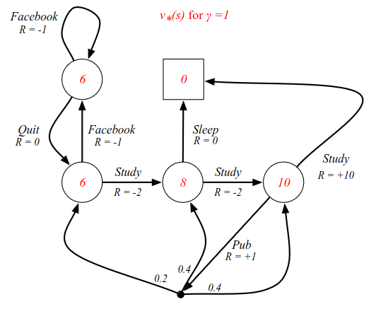
If you are in C3 you can go to the pub, or study which gives +10 reward. From C2 we
can go to sleep with R=0, or go to C3 which has a value of 10. In state C1 we have
6, because it is -2 reward from C2 which has 8. The v
*(s) tells
us how good it is to be in each state. But even now it doesn't tell us how to behave.
To find the behaviour, there are two things we can do. For instance by defining
the q
*(s, a) values.
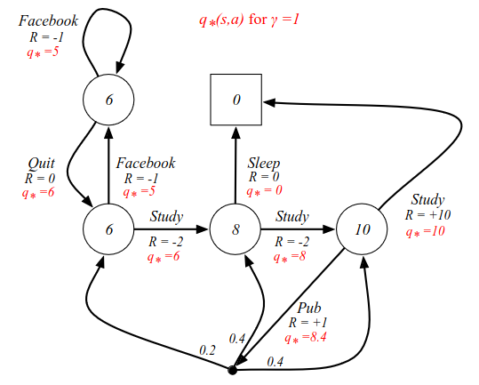
The action-value function labels each arc (or action). For instance, from C3, the optimal
value is 10. From C2 there are two choices: one with reward 0 and one with reward 8,
so now we can choose the optimal decision. Going from C3 to the pub, we get a reward of
8.4, which is the average of all subsequent actions.
Calculation for Pub cell: 0.4(10) + 0.4(8) + 0.2(6) = 4 + 3.2 + 1.2 = 8.4.
Optimal Policy
What we really care about is the optimal policy, which raises the question: what is the
optimal policy? What is the best possible way to behave in an MDP? Now, a policy is just a stochastic
mapping from state to actions, but what is the one? So far we have just talked about what the
max reward we can get is. In order to find an optimal policy, we need to define a notion of
optimality, which in turn means we need to define what it means that one policy is better than
another.
Define a partial ordering over all policies:
$$
\pi \geq \pi' \quad\text{if}\; v_\pi(s)\geq v_{\pi'}(s),\forall s
$$
From two policies: one poicy is better than the other if it has a higher value function
in all states.
The following is a very important Theorem which is present in all RL books. It shows that
at least one optimal policy which is better than or equal to all other policies.
For instance: the policy that always choses the maximum q
*. It is possible
to have several optimal policies.
Theorem
For any Markov Decision Process,
- There exists an optimal policy $\pi_*$ that is better than or equal to all other
policies; $\pi_*\geq\pi,\forall\pi$.
- All optimal policies achieve the optimal value function: $\pi_*(s) = v_*(s)$
- All optimal policies achieve the optimal action-value function:
$q_{\pi_*}(s, a) = q_*(s,a)
How do we find the optimal policy?
An optimal policy can be found by maximising over q
*(s,a):
$$
\pi_*(a\mid s) =
\left\{
\begin{array}{cl}
1 & \text{if}\; a=\underset{a\in\mc{A}}{\text{argmax}}\;q_*(s, a) \\
0 & \text{otherwise}
\end{array}
\right.
$$
In words: we solve for q
* and the policy chooses the best action.
Demonstrating on our example. The red arrows signify the maximum q
*
from each state and also the optimal policy.
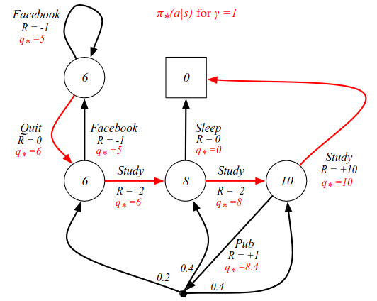
How do we arrive at these q
* values in practice? As we have seen time
and again, they are the central quantity that we are trying to figure out. One way was to
work our way backwards, starting in C3. And this is precisely what we get out of a Bellman
equation.
The optimal value functions are recursively related by the Bellman optimality equations:
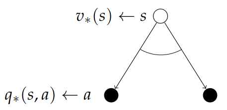
Where:
$$
v_*(s) = \max_a q_*(s, a)
$$
In most books when they talk about the Bellman equation for MDPs, they are referencing this,
not the one we looked at earlier. This is the equation that tells you how to solve your MDP;
how to relate the optimal value function to itself.
Again, we do the one-step look-ahead. We startin some state and ask ourselves: what is the
optimal value of being in some state, where you can consider each of the actions you can take
which will take you to one of the chance nodes/action nodes. Now - instead of taking the
average (or the expectation) that we took earlier, we now take the maximum value!
And now we can do the other half, as we did earlier. We did v going to q, now we do q going to
v. How good is one of those red arcs in the diagram?
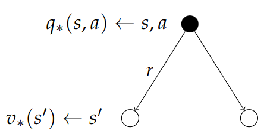
we do a one-step look-ahead, and we look at what the environment might do to us (just like
going to the pub in the example). But each of the states we might end up in has an optimal
value. We assume we know the optimal value in each state, and we do a weighted average
according to the environment probabilities. In this case we can't take the maximum,
because we don't decide which state we end up in.
$$
q_*(s, a) = \mc{R}_s^a + \gamma\sum_{s'\in S}\mc{P}_{ss'}^a v_*(s')
$$
The optimal action-value is the immediate reward, plus the weighted average of
all future states multiplied by the value of each state.
By combining these charts we have a two-step look-ahead and we get the recursive relationship
that relates v
* to itself in and which gives us an equation we can solve.
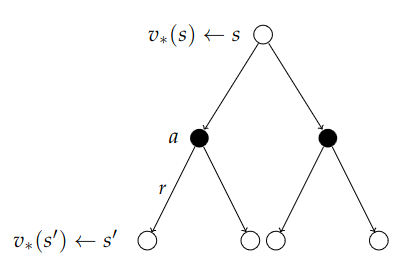
We look at the actions we can take and maximizing over those, we look at the "dice"
the environment rolls and average over them, then we look at the value of where we end up,
collect all the information and return to the root node, and get an idea of how good it
is to be in that state. This is the Bellman Optimalit Equation.
$$
v_*(s) = \max_{a}\mc{R}_s^a + \gamma\sum_{s'\in S}\mc{P}_{ss'}^a v_*(s')
$$
Finally, here is the same thing in reverse. Starting with the action and find out how good
the arcs are. We first consider what the environment does and average over the probabilities,
and after we reach a state, we decide what the next decision should be. We backtrack and
that tells us the q
*value.
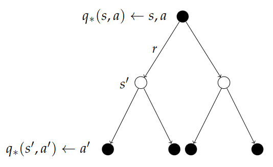
$$
q_*(s, a) = \mc{R}_s^a + \gamma\sum_{s'\in S}\mc{P}_{ss'}^aq_*(s, a)
$$
To make it more concrete, we can consider the updated example, starting from C1:
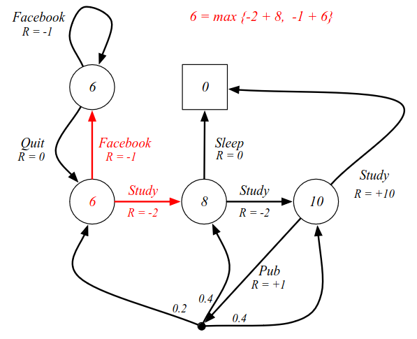
There are two possible actions we can take: FB or Study. No noise or environment randomness.
Looking ahead one step, we can calculate the value function of where we end up.
(See equation in image). We maximize over all possible actions to get the value of the state.
Solving the Bellman Optimality Equation
How do we solve this in practice? Earlier we had Bellman equations with expectations where
we could just solve it with some matrix algebra. However, that does not work for optimizing
the Bellman Optimality Equation: it is non-linear: we have a max inside there for instance.
In general, there is no general solution to the Bellman Optimality Equation.
There are however, several iterative solution methods:
- Value iteration
- Policy iteration
- Q-learning
- Sarsa
(Several of these will be covered throughout the lectures).
Questions and Answers
Q: What do we do when there are a million states and a million actions?
How do model/represent the MDP?
A: Typically the reward function is given by the environment dynamics.
Take an Atari game for instance (160×192 pixels ≈ 30K pixels?). In total
there are many more than a million states, but the score is just a function of the state.
In this case we extract the score somewhere on the screen. Typically there is some function
mapping state to reward. In a sense the score characterizes how much of the problem you
have solved.
Extensions to MDPs
Skipped for now...